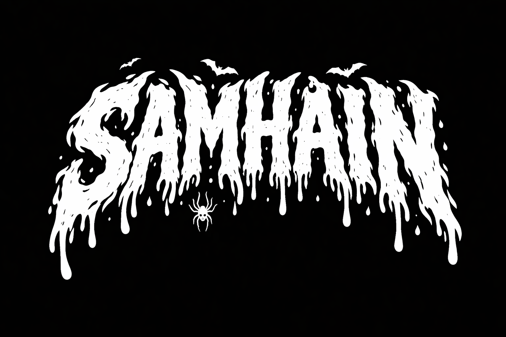

Bonfire dinner
We will cook together on Saturday evening beside the open bonfire. Bring your own drinks and snacks, and settle in for a proper winter welcome.
Autumn into winter
A private, cozy celebration of the old pagan season shift. Think river mornings, bonfire dinners, and late-night DJs under the stars.

We will cook together on Saturday evening beside the open bonfire. Bring your own drinks and snacks, and settle in for a proper winter welcome.
DJs and friends spin from 4pm Friday. Dance all afternoon Saturday, then keep it mellow after midnight.
Dress in fur, knits, cloaks, or bring your take on old festival imagery. Expect warm lights, candles, and a rustic fit-out.